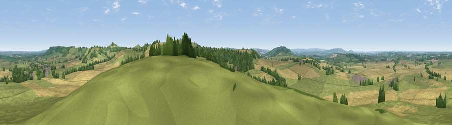

Viewpoint near Upper Tysoe
#10028 in England · top 14% of its area beats it · near Upper Tysoe · footpathWhere it is
The exact computed spot (SP 33125 42725). Click the marker for map links.
Public access: a public right of way passes within 42 m of this spot. Computed from Natural England's CRoW access layer and OpenStreetMap rights of way — not the legal definitive map. Always verify locally.
The view, rendered

A 360° render of this exact spot computed from the terrain model, tree cover and land cover — summer colours, afternoon light, calibrated against photographs of famous viewpoints. Real trees, hedges and buildings will differ in detail.
The panorama
Grey silhouette: terrain skyline in each direction (720 bearings, Earth curvature and refraction included). Dashed green: skyline with trees (+15 m) and buildings (+8 m) as obstacles. Blue strip: how far the ground is visible on each bearing.
Where the view opens
Wedge length = distance to the farthest visible ground on that bearing (vegetation-aware). Rings at 10, 25 and 50 km.
What fills the view
44% cropland · 44% grassland · 10% woodland · 1% built-up
Angular shares of the visible panorama (visual magnitude), not map area. Landscape diversity 0.44 (0–1 Shannon).
Key numbers
More beautiful places nearby
The staircase of upgrades: each row has a higher view potential than everything closer. Driving times are estimates from straight-line distance, calibrated against real road routing — check an actual route before setting out.
| Place | Direction | Drive | Score |
|---|---|---|---|
| Viewpoint near Upper Tysoe | SE · 1 km | ~3 min | 70.4 |
| Viewpoint near Radway | NE · 8 km | ~16 min | 71.7 |
| Viewpoint near Ilmington | W · 12 km | ~23 min | 72.6 |
| Viewpoint near Meon Vale | W · 16 km | ~28 min | 77.0 |
| Broadway Hill | WSW · 23 km | ~38 min | 77.7 |
| Viewpoint near Elmley Castle | W · 36 km | ~54 min | 80.5 |
| Bredon Hill | W · 37 km | ~56 min | 83.0 |
| Summer Hill | W · 56 km | ~78 min | 85.4 |
52.08190, -1.51803 · source: screening · position refined by local search. Computed location — check access rights before visiting.